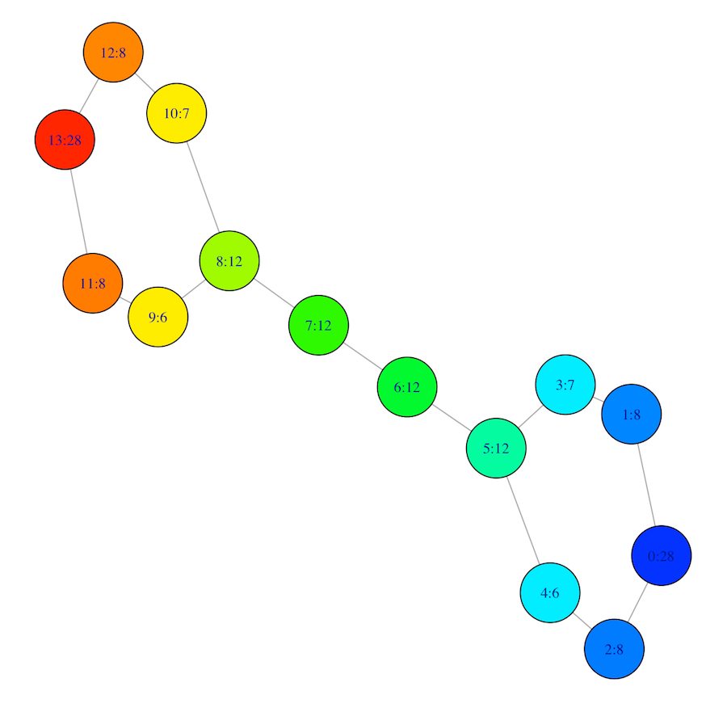
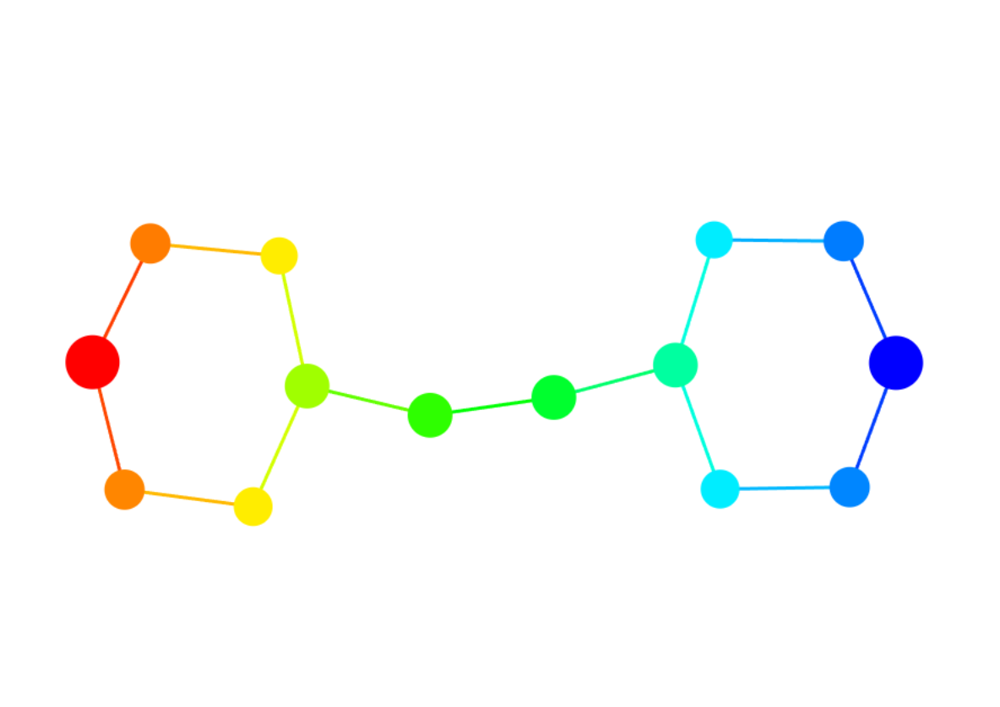

The Mapper package provides a configurable implementation of the Mapper framework (see 1). The package includes:

Efficient R6 class generators for several of Mappers components
An expressive interface to customize Mapper components via method chaining
Pre-configured defaults and built-in tools for people unfamiliar with Mapper
Several choices for visualizing and interacting with mappers
Options to export the \(1\)-skeleton to any graph-based representation
The package was designed to make modifying or extending the Mapper method simple and efficient, without limiting its generality.
Getting started
Installation
Install the Mapper package from github as follows:
A CRAN release is planned for the near future.
Creating a complex
Mapper takes as input a point cloud \(X\) and a reference map \(f : X \to Z\), and returns a topological summary of \(X\) expressed via a cover equipped on the codomain of the map. Here’s an example where points are sampled from an ‘eight-curve’ in \(\mathbb{R}^2\):
\[g(t) = [\cos(t), \sin(t)\cos(t)],\; t \in \Big(-\frac{1}{2}\pi, \frac{3}{2}\pi\Big)\] In the example below, \(X\) is created from equally spaced samples over \(t\), and the map chosen is simply the \(x\)-coordinate of the shape, \(Z = f(X) = x_1\).
t <- seq(-0.5*pi, (3/2)*pi, length.out = 100)
eight <- cbind(x1=cos(t), x2=sin(t)*cos(t))
f_x <- matrix(cos(t))
## Use a rainbow palette
rbw_col <- rainbow(length(f_x), start = 0, end = 4/6)
col <- rbw_col[cut(f_x, length(f_x), labels = FALSE)]
## View the data along with the mapping
layout(matrix(1:2, nrow = 1))
plot(eight, pch = 20, col = col, main = expression(X %subset% R^2))
stripchart(f_x, pch = "|", main = expression(f(X) %subset% R))
points(cbind(f_x, 1), pch = "|", col = col, cex = 2)
Below is a possible way to construct a mapper.
Mapper construction for 100 objects
Cover: (typename = Restrained Rectangular, number intervals = [10], overlap = [50])There are multiple options one may use to visualize mapper. The easiest is to export the \(1\)-skeleton to a mature graph plotting library, such as igraph:
am <- m$simplicial_complex$as_adjacency_matrix()
g <- igraph::graph_from_adjacency_matrix(am, mode = "undirected", add.colnames = NA)
plot(g, vertex.size = 8L, vertex.color = bin_color(), label.cex = 0.3)For more interactive options, see the section below.
Customizing Mapper
Almost any component of the Mapper method can be customized.
Want to change the metric? Pass any measure used in the proxy package.
Or just replace the clustering algorithm entirely
## If using a custom metric, just compute the distance matrix
m$clustering_algorithm <- function(X, idx, num_bins=10){
dist_x <- dist(X[idx,], method = "manhattan")
hc <- hclust(dist_x, method = "average")
cutoff_first_bin(hc, diam = max(dist_x), num_bins)
}If you prefer a different covering, just assign a valid object inheriting from CoverRef.
## Below is equivalent to m$use_cover(filter_values = f_x, typename="fixed rectangular", <parameters>)
f_cover <- FixedRectangularCover$new(filter_values = f_x)
f_cover$number_intervals <- 10
f_cover$percent_overlap <- 50
m$cover <- f_cover$construct_cover()A list of available covering methods can be printed as follows:
## Typename: Generator: Parameters:
## fixed rectangular FixedRectangularCover number_intervals, percent_overlap
## restrained rectangular RestrainedRectangularCover number_intervals, percent_overlap
## adaptive AdaptiveCover number_intervals, percent_overlap, quantile_method
## ball BallCover epsilonAlternatively, you can create your own cover. See the article on how to make custom cover.
The cover is composed of subsets of the data indexed by an index set, which can be used as keys into the cover itself
## [1] "(1)" "(2)" "(3)" "(4)" "(5)" "(6)" "(7)" "(8)" "(9)" "(10)"## [1] TRUEThis can be useful if you want to only update only part of the complex for some reason, e.g. recluster part of the data with different clustering parameters. For example, to recluster the subsets of the data associated with the first five indices, you can do:
clustering_parameters <- list(num_bins=5L)
m$compute_vertices(which_levels = m$cover$index_set[1:5], clustering_parameters)The same rule applies to computing the edges.
idx_pairs <- t(apply(combn(5, 2), 2, function(ls_idx) { m$cover$index_set[ls_idx] }))
m$compute_edges(which_level_pairs = idx_pairs)If the construction has too many edges, you could require the intersection size be above a certain threshold (default is 1). This isn’t technically part of Mappers definition, but could be useful in practical applications.
The simplicial complex is available via the $simplicial_complex member, and the points in contained in each vertex is available via the $vertices member.
## Simplex Tree with (18, 16) (0, 1)-simplices## $`0`
## [1] 63 64 65 66 67 68 69 70 71 72 73 74 75 76
## attr(,"level_set")
## [1] 1
##
## $`1`
## [1] 59 60 61 62 63 64 65 66 67 68
## attr(,"level_set")
## [1] 2As shown above, the complex is stored in a Simplex Tree (see 2), and the vertices are stored as a list. Each vertex also has an attribute “level_set” denoting the index in the index set of the cover its associated with.
The \(1\)-skeleton can be exported to any of the usual graph-type data structures.
Visualizing the mapper
To get a quick overview of what the graph looks like, you can convert to an igraph object. By default, the vertices are sized logarithmically according to how many points they have in them and colored based on the mean value of the points \(f\) values. Each vertex is given a label of the form “x:y” where ‘x’ denotes the vertex id, and ‘y’ denotes the number of points in the vertex.

More more interactive plotting methods, the mapper can be converted to a grapher object.
## Visualize interactively w/ grapher
library("grapher")
m$as_grapher(construct_widget = TRUE) %>% center()
References
- Singh, Gurjeet, Facundo Mémoli, and Gunnar E. Carlsson. “Topological methods for the analysis of high dimensional data sets and 3d object recognition.” SPBG. 2007.
- Boissonnat, Jean-Daniel, and Clément Maria. “The simplex tree: An efficient data structure for general simplicial complexes.” Algorithmica 70.3 (2014): 406-427.
Links
- Report a bug at
https://github.com/peekxc/mapper
License
- file LICENSE
Developers
- Matt Piekenbrock
Author, maintainer, copyright holder - All authors...